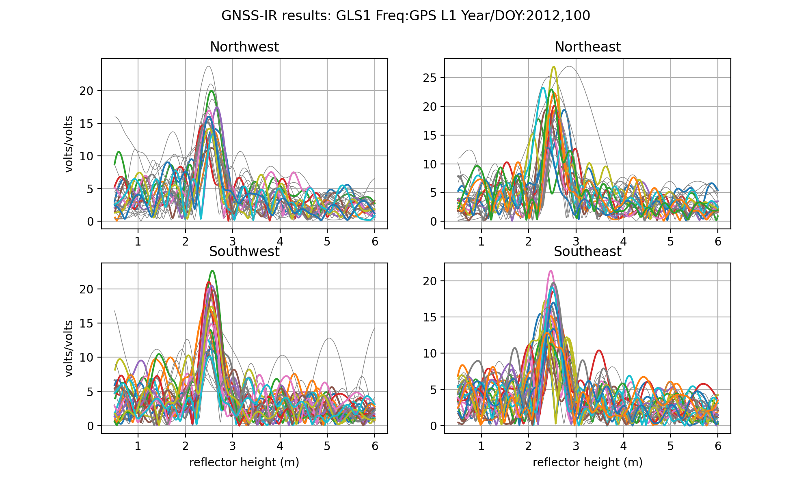
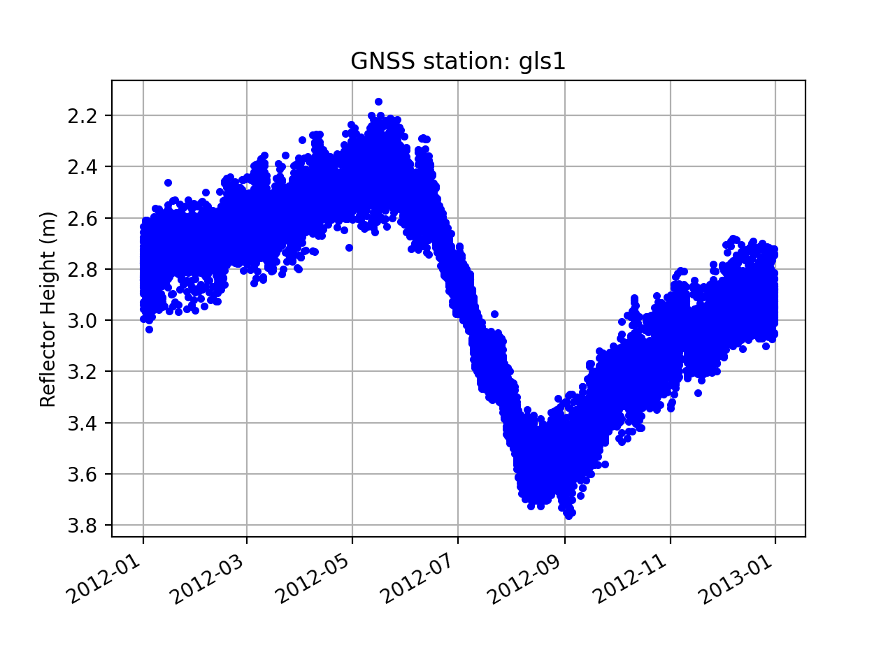

Dye2, Greenland

Station Name: gls1
Location: Dye2, Qeqqata Province, Greenland
DOI: https://doi.org/10.7283/T5WS8RDB
Ellipsoidal Coordinates:
Latitude: 66.47940
Longitude: -46.31015
Height: 2150 m
Data Summary
Station gls1 was installed at Dye2 on the Greenland Ice Sheet in 2011. The antenna is mounted on a long pole; approximately 3.5-meter of the pole was above the ice at the time of installation. The receiver at the site only consistently tracks legacy GPS signals. A detailed discussion of the monument and data from the station can be found in Larson, MacFerrin, and Nylen (2020). The latest position time series for gls1 can be retrieved from the Nevada Geodetic Laboratory. We also have a utility you can use: download_unr
As gls1 is on an ice sheet and the ice surface is relatively smooth in all directions, it is unlikely that a complicated azimuth mask will be required. gls1 was originally installed with an elevation mask of 7 degrees, which is suboptimal for reflections research. Even though the mask was later removed, we will use 7 degrees as the minimum elevation angle for all our analysis. Similarly, even though the site managers later changed to enable L2C tracking, to ensure that a consistent dataset is being used, we will only use L1 data. gls1 is an example case for the GNSS-IR Web App.
quickLook
Our ultimate goal in this use case is to analyze one year of data. We have chosen the year 2012 because there was a large melt event on the ice sheet. In order to set the proper quality control parameters, we will use quickLook for one day. First we need to translate one day of RINEX data:
rinex2snr gls1 2012 100
And then:
quickLook gls1 2012 100
This produces two plots. The first is a geographically oriented (northwest, northeast and so on) summary of the frequency content of the GPS data:
{kind=link}
The peaks in these periodograms tell us how high the GPS antenna is above the ice surface. The peaks are associated with a reflector height (RH) of ~2.5 meters. (For more details on quickLook output)
The next plot shows results with respect to azimuth angle. The top plot is RH and the other two are quality control measures: peak amplitude and peak to noise ratio.

In the top plot we see that the retrieved reflector heights are consistent at all azimuths. Retrievals for azimuths between 340 degrees and 40 degrees are consistently marked as not having met quality control settings.From the center plot we can see that a peak2noise QC metric of 3 is reasonable. Similarly, the amplitudes (bottom plot) are generally larger than 10, so 8 is an acceptable minimum value.
Compare that to its level when the site was installed in the year 2011:
rinex2snr gls1 2011 271 -archive unavco
quickLook gls1 2014 271

Measure Snow Accumulation in 2012
The first step is to make SNR files for the year 2012:
rinex2snr gls1 2012 1 -doy_end 366
We will next analyze a year of L1 GPS reflection data from this site. We will use the default minimum and maximum reflector height values (0.4 and 6 meters). But for the reasons previously stated, we will set a minimum elevation angle of 7 degrees. We also specify that we only want to use the L1 data and set peak2noise and a mimimum amplitude for the periodograms. We use the utility make_json_input to set and store these analysis settings:
make_json_input gls1 66.479 -46.310 2148.578 -e1 7 -l1 True -peak2noise 3 -ampl 8
Example json file.
We have also excluded a bit of the northern tracks by hand-editing the json. This is not required as the software appears to be appropriately removing these unreliable azimuths. Note: the removal of these azimuths is more related to the GPS satellite inclination than local conditions at gls1.
Now that you have SNR files and json inputs, you can go ahead and estimate reflector heights for the year 2012:
gnssir gls1 2012 1 -doy_end 366
We will use the daily_avg tool to compute a daily average RH. A median filter is set to 0.25 meters and 30 individual tracks are required in order to recover a daily average:
daily_avg gls1 0.25 30
Three plots are returned. The first is all tracks:
{kind=link}
The second shows the number of tracks used in the daily average:

Finally, the average RH each day for the year 2012:

This data shown in the last plot show you long-term accumulation as well as relatively small snow accumulation events. The overall plot is dominated by the large melt event in the summer.
A sample daily average RH file.
Things to think about:
Why do the number of useable tracks drop drastically at various times in the year?
Why are the number of tracks retrieved in the summer days consistently higher in number than in other times of the year? What is different about the surface in the summer of 2012?
How would you find out whether this year was anomalously large melt?
Try comparing the GNSS-IR results with the validation data
The original J. Glaciology paper discussing this site.